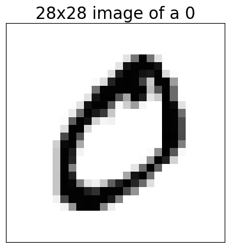
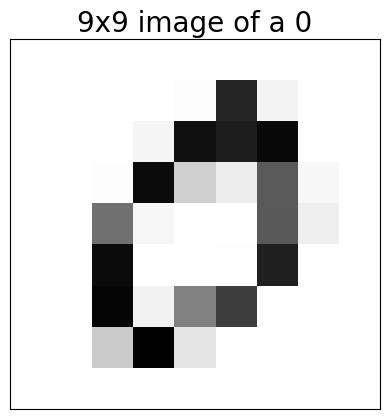
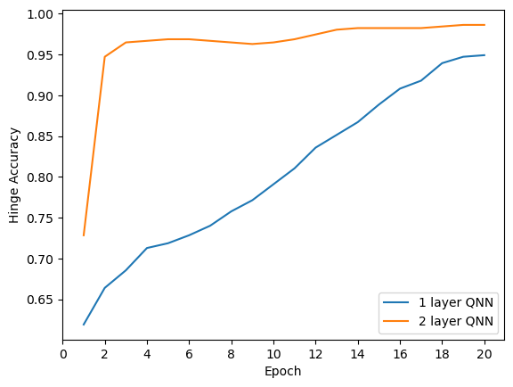
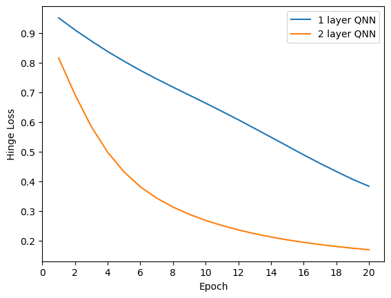

import pennylane as qml
import tensorflow as tf
#import sklearn.datasets
#from sklearn.datasets import fetch_openml
import numpy as np
from matplotlib import pyplot as plt
tf.keras.backend.set_floatx('float64')
from silence_tensorflow import silence_tensorflow
silence_tensorflow() # this stops tensorflow complaining about converting from complex to float!
---------------------------------------------------------------------------
ModuleNotFoundError Traceback (most recent call last)
Cell In[1], line 1
----> 1 import pennylane as qml
2 import tensorflow as tf
3 #import sklearn.datasets
4 #from sklearn.datasets import fetch_openml
ModuleNotFoundError: No module named 'pennylane'
Load and reduce the data#
Load the MNIST data and check number of training and test examples
(x_train, y_train), (x_test, y_test) = tf.keras.datasets.mnist.load_data()
# Rescale the images from [0,255] to the [0.0,1.0] range.
x_train, x_test = x_train[..., np.newaxis]/255.0, x_test[..., np.newaxis]/255.0 # add colour dimension
print("Number of original training examples:", len(x_train))
print("Number of original test examples:", len(x_test))
Number of original training examples: 60000
Number of original test examples: 10000
Create a function to filter out only 0 and 1
def filter_01(x, y):
keep = (y == 0) | (y == 1)
x, y = x[keep], y[keep]
y = y == 0
return x,y
x_train, y_train = filter_01(x_train, y_train)
x_test, y_test = filter_01(x_test, y_test)
print("Number of filtered training examples:", len(x_train))
print("Number of filtered test examples:", len(x_test))
Number of filtered training examples: 12665
Number of filtered test examples: 2115
Plot the original images
plt.imshow(x_train[0, :, :, 0], cmap='Greys')
ax = plt.gca()
ax.set_xticks([])
ax.set_yticks([])
plt.title("28x28 image of a 0", fontsize=20)
# save to file as pdf
plt.savefig('28x28_MNIST_0.pdf', bbox_inches='tight', pad_inches=0)
plt.show()

Reduce images to 9x9
x_train_small = tf.image.resize(x_train, (9,9)).numpy()
x_test_small = tf.image.resize(x_test, (9,9)).numpy()
plt.imshow(x_train_small[0,:,:,0], vmin=0, vmax=1, cmap='Greys')
ax = plt.gca()
ax.set_xticks([])
ax.set_yticks([])
plt.title("9x9 image of a 0", fontsize=20)
# save to file as pdf
plt.savefig('9x9_MNIST_0.pdf', bbox_inches='tight', pad_inches=0)
plt.show()

Further reduce images to 9x1
x_train_small = x_train_small[:,4,:,:].reshape((-1,9)) # take only central slices
x_test_small = x_test_small[:,4,:,:].reshape((-1,9)) # take only central slices
print(f"shape = {x_train_small.shape}")
plt.imshow(x_train_small[0,:].reshape((1,-1)), vmin=0, vmax=1, cmap='Greys')
ax = plt.gca()
ax.set_xticks([])
ax.set_yticks([])
plt.title("9x1 image of a 0", fontsize=20)
# save to file as pdf
plt.savefig('9x1_MNIST_0.pdf', bbox_inches='tight', pad_inches=0)
plt.show()
shape = (12665, 9)
Set up the Quantum Neural Network#
Create quantum circuit using pennylane qnode, then conver this to a Keras layer to make a Keras model
n_qubits = 9
n_layers = 1
dev = qml.device("default.qubit", wires=n_qubits)
@qml.qnode(dev, interface="tf")
def qnode(inputs, weights):
if len(inputs.shape) == 1:
for ii in range(n_qubits):
qml.RY(np.pi * inputs[ii], wires=ii)
else:
for ii in range(n_qubits):
qml.RY(np.pi * inputs[:,ii], wires=ii)
for jj in range(n_layers):
for ii in range(n_qubits-1):
qml.RZ(weights[jj,2*ii,0], wires=0)
qml.RY(weights[jj,2*ii,1], wires=0)
qml.RZ(weights[jj,2*ii,2], wires=0)
qml.RZ(weights[jj,2*ii+1,0], wires=ii+1)
qml.RY(weights[jj,2*ii+1,1], wires=ii+1)
qml.RZ(weights[jj,2*ii+1,2], wires=ii+1)
#qml.U3(*list(weights[jj,2*ii,:]), wires=0)
#qml.U3(*list(weights[jj,2*ii+1,:]), wires=ii+1)
qml.CNOT(wires=[ii+1,0])
qml.RZ(weights[jj,2*(n_qubits-1),0], wires=0)
qml.RY(weights[jj,2*(n_qubits-1),1], wires=0)
qml.RZ(weights[jj,2*(n_qubits-1),2], wires=0)
return qml.expval(qml.PauliZ(0))
weight_shapes = {"weights": (n_layers, 2*(n_qubits-1)+1, 3) }
qlayer = qml.qnn.KerasLayer(qnode, weight_shapes, output_dim=1, name="quantumLayer")
inputs = tf.keras.Input(shape=(n_qubits,), name="inputs")
outputs = qlayer(inputs)
model = tf.keras.Model(inputs=inputs, outputs=outputs, name="QNN")
model.predict(x_train_small[0,:])
print(model.summary())
1/1 [==============================] - 0s 82ms/step
Model: "QNN"
_________________________________________________________________
Layer (type) Output Shape Param #
=================================================================
inputs (InputLayer) [(None, 9)] 0
quantumLayer (KerasLayer) (None, 1) 51
=================================================================
Total params: 51 (408.00 Byte)
Trainable params: 51 (408.00 Byte)
Non-trainable params: 0 (0.00 Byte)
_________________________________________________________________
None
Redefine the classification values to match the Hinge loss
y_train_hinge = 2.0*y_train-1.0
y_test_hinge = 2.0*y_test-1.0
Define the hinge accuracy
def hinge_accuracy(y_true, y_pred):
y_true = tf.squeeze(y_true) > 0.0
y_pred = tf.squeeze(y_pred) > 0.0
result = tf.cast(y_true == y_pred, tf.float32)
return tf.reduce_mean(result)
Compile and train the model#
Compile the model using the hinge loss and accuracy and the Adam optimiser
model.compile(
loss=tf.keras.losses.Hinge(),
optimizer=tf.keras.optimizers.Adam(),
metrics=[hinge_accuracy])
WARNING:absl:At this time, the v2.11+ optimizer `tf.keras.optimizers.Adam` runs slowly on M1/M2 Macs, please use the legacy Keras optimizer instead, located at `tf.keras.optimizers.legacy.Adam`.
print(model.summary())
Model: "QNN"
_________________________________________________________________
Layer (type) Output Shape Param #
=================================================================
inputs (InputLayer) [(None, 9)] 0
quantumLayer (KerasLayer) (None, 1) 51
=================================================================
Total params: 51 (408.00 Byte)
Trainable params: 51 (408.00 Byte)
Non-trainable params: 0 (0.00 Byte)
_________________________________________________________________
None
Train the model over 20 epochs
EPOCHS = 20
BATCH_SIZE = 32
NUM_EXAMPLES = 512
print(f"x shape = {x_train_small.shape}")
print(NUM_EXAMPLES)
x_train_sub = x_train_small[:NUM_EXAMPLES]
y_train_hinge_sub = y_train_hinge[:NUM_EXAMPLES]
print(f"x train shape = {x_train_sub.shape}")
x_test_sub = x_test_small[:,:]
y_test_sub = y_test[:]
print(f"x test shape = {x_test_sub.shape}")
qnn_history_1layer = model.fit(
x_train_sub, y_train_hinge_sub,
batch_size=BATCH_SIZE,
epochs=EPOCHS,
verbose=1)#,
#validation_data=(x_test_sub, y_test_sub))
qnn_results_1layer = model.evaluate(x_test_sub, y_test_sub)
x shape = (12665, 9)
512
x train shape = (512, 9)
x test shape = (2115, 9)
Epoch 1/20
16/16 [==============================] - 3s 153ms/step - loss: 0.9515 - hinge_accuracy: 0.6191
Epoch 2/20
16/16 [==============================] - 2s 154ms/step - loss: 0.9108 - hinge_accuracy: 0.6641
Epoch 3/20
16/16 [==============================] - 3s 158ms/step - loss: 0.8735 - hinge_accuracy: 0.6855
Epoch 4/20
16/16 [==============================] - 2s 152ms/step - loss: 0.8379 - hinge_accuracy: 0.7129
Epoch 5/20
16/16 [==============================] - 2s 150ms/step - loss: 0.8053 - hinge_accuracy: 0.7188
Epoch 6/20
16/16 [==============================] - 2s 148ms/step - loss: 0.7743 - hinge_accuracy: 0.7285
Epoch 7/20
16/16 [==============================] - 2s 149ms/step - loss: 0.7454 - hinge_accuracy: 0.7402
Epoch 8/20
16/16 [==============================] - 2s 149ms/step - loss: 0.7177 - hinge_accuracy: 0.7578
Epoch 9/20
16/16 [==============================] - 2s 146ms/step - loss: 0.6907 - hinge_accuracy: 0.7715
Epoch 10/20
16/16 [==============================] - 2s 145ms/step - loss: 0.6637 - hinge_accuracy: 0.7910
Epoch 11/20
16/16 [==============================] - 2s 145ms/step - loss: 0.6360 - hinge_accuracy: 0.8105
Epoch 12/20
16/16 [==============================] - 2s 150ms/step - loss: 0.6078 - hinge_accuracy: 0.8359
Epoch 13/20
16/16 [==============================] - 2s 145ms/step - loss: 0.5784 - hinge_accuracy: 0.8516
Epoch 14/20
16/16 [==============================] - 2s 145ms/step - loss: 0.5489 - hinge_accuracy: 0.8672
Epoch 15/20
16/16 [==============================] - 2s 145ms/step - loss: 0.5192 - hinge_accuracy: 0.8887
Epoch 16/20
16/16 [==============================] - 2s 146ms/step - loss: 0.4893 - hinge_accuracy: 0.9082
Epoch 17/20
16/16 [==============================] - 2s 145ms/step - loss: 0.4606 - hinge_accuracy: 0.9180
Epoch 18/20
16/16 [==============================] - 2s 146ms/step - loss: 0.4333 - hinge_accuracy: 0.9395
Epoch 19/20
16/16 [==============================] - 2s 150ms/step - loss: 0.4066 - hinge_accuracy: 0.9473
Epoch 20/20
16/16 [==============================] - 2s 148ms/step - loss: 0.3832 - hinge_accuracy: 0.9492
67/67 [==============================] - 4s 64ms/step - loss: 0.3552 - hinge_accuracy: 0.9697
Create and train a 2 layer version of the QNN
n_qubits = 9
n_layers = 2
dev = qml.device("default.qubit", wires=n_qubits)
@qml.qnode(dev, interface="tf")
def qnode(inputs, weights):
if len(inputs.shape) == 1:
for ii in range(n_qubits):
qml.RY(np.pi * inputs[ii], wires=ii)
else:
for ii in range(n_qubits):
qml.RY(np.pi * inputs[:,ii], wires=ii)
for jj in range(n_layers):
for ii in range(n_qubits-1):
qml.RZ(weights[jj,2*ii,0], wires=0)
qml.RY(weights[jj,2*ii,1], wires=0)
qml.RZ(weights[jj,2*ii,2], wires=0)
qml.RZ(weights[jj,2*ii+1,0], wires=ii+1)
qml.RY(weights[jj,2*ii+1,1], wires=ii+1)
qml.RZ(weights[jj,2*ii+1,2], wires=ii+1)
#qml.U3(*list(weights[jj,2*ii,:]), wires=0)
#qml.U3(*list(weights[jj,2*ii+1,:]), wires=ii+1)
qml.CNOT(wires=[ii+1,0])
qml.RZ(weights[jj,2*(n_qubits-1),0], wires=0)
qml.RY(weights[jj,2*(n_qubits-1),1], wires=0)
qml.RZ(weights[jj,2*(n_qubits-1),2], wires=0)
return qml.expval(qml.PauliZ(0))
weight_shapes = {"weights": (n_layers, 2*(n_qubits-1)+1, 3) }
qlayer = qml.qnn.KerasLayer(qnode, weight_shapes, output_dim=1, name="quantumLayer")
inputs = tf.keras.Input(shape=(n_qubits,), name="inputs")
outputs = qlayer(inputs)
model2 = tf.keras.Model(inputs=inputs, outputs=outputs, name="QNN")
model2.predict(x_train_small[0,:])
print(model2.summary())
1/1 [==============================] - 0s 91ms/step
Model: "QNN"
_________________________________________________________________
Layer (type) Output Shape Param #
=================================================================
inputs (InputLayer) [(None, 9)] 0
quantumLayer (KerasLayer) (None, 1) 102
=================================================================
Total params: 102 (816.00 Byte)
Trainable params: 102 (816.00 Byte)
Non-trainable params: 0 (0.00 Byte)
_________________________________________________________________
None
model2.compile(
loss=tf.keras.losses.Hinge(),
optimizer=tf.keras.optimizers.Adam(),
metrics=[hinge_accuracy])
WARNING:absl:At this time, the v2.11+ optimizer `tf.keras.optimizers.Adam` runs slowly on M1/M2 Macs, please use the legacy Keras optimizer instead, located at `tf.keras.optimizers.legacy.Adam`.
EPOCHS = 20
BATCH_SIZE = 32
NUM_EXAMPLES = 512 #x_train_small.shape[0]
print(NUM_EXAMPLES)
x_train_sub = x_train_small[:NUM_EXAMPLES,:]
y_train_hinge_sub = y_train_hinge[:NUM_EXAMPLES]
x_test_sub = x_test_small[:,:]
y_test_sub = y_test[:]
qnn_history_2layer = model2.fit(
x_train_sub, y_train_hinge_sub,
batch_size=BATCH_SIZE,
epochs=EPOCHS,
verbose=1)#,
#validation_data=(x_test_sub, y_test_sub))
qnn_results_2layer = model2.evaluate(x_test_sub, y_test_sub)
512
Epoch 1/20
16/16 [==============================] - 4s 278ms/step - loss: 0.8160 - hinge_accuracy: 0.7285
Epoch 2/20
16/16 [==============================] - 4s 273ms/step - loss: 0.6923 - hinge_accuracy: 0.9473
Epoch 3/20
16/16 [==============================] - 4s 273ms/step - loss: 0.5844 - hinge_accuracy: 0.9648
Epoch 4/20
16/16 [==============================] - 4s 277ms/step - loss: 0.4981 - hinge_accuracy: 0.9668
Epoch 5/20
16/16 [==============================] - 4s 276ms/step - loss: 0.4318 - hinge_accuracy: 0.9688
Epoch 6/20
16/16 [==============================] - 4s 280ms/step - loss: 0.3814 - hinge_accuracy: 0.9688
Epoch 7/20
16/16 [==============================] - 4s 272ms/step - loss: 0.3432 - hinge_accuracy: 0.9668
Epoch 8/20
16/16 [==============================] - 4s 273ms/step - loss: 0.3129 - hinge_accuracy: 0.9648
Epoch 9/20
16/16 [==============================] - 4s 274ms/step - loss: 0.2886 - hinge_accuracy: 0.9629
Epoch 10/20
16/16 [==============================] - 4s 272ms/step - loss: 0.2679 - hinge_accuracy: 0.9648
Epoch 11/20
16/16 [==============================] - 4s 274ms/step - loss: 0.2507 - hinge_accuracy: 0.9688
Epoch 12/20
16/16 [==============================] - 4s 273ms/step - loss: 0.2359 - hinge_accuracy: 0.9746
Epoch 13/20
16/16 [==============================] - 4s 280ms/step - loss: 0.2230 - hinge_accuracy: 0.9805
Epoch 14/20
16/16 [==============================] - 4s 277ms/step - loss: 0.2120 - hinge_accuracy: 0.9824
Epoch 15/20
16/16 [==============================] - 4s 273ms/step - loss: 0.2023 - hinge_accuracy: 0.9824
Epoch 16/20
16/16 [==============================] - 4s 273ms/step - loss: 0.1938 - hinge_accuracy: 0.9824
Epoch 17/20
16/16 [==============================] - 4s 273ms/step - loss: 0.1865 - hinge_accuracy: 0.9824
Epoch 18/20
16/16 [==============================] - 4s 272ms/step - loss: 0.1800 - hinge_accuracy: 0.9844
Epoch 19/20
16/16 [==============================] - 4s 274ms/step - loss: 0.1741 - hinge_accuracy: 0.9863
Epoch 20/20
16/16 [==============================] - 4s 273ms/step - loss: 0.1692 - hinge_accuracy: 0.9863
67/67 [==============================] - 8s 113ms/step - loss: 0.1673 - hinge_accuracy: 0.9879
Plot the results!#
# plot the hinge accuracy for the qnn history for both 1 and 2 layer on the same axes
plt.plot(np.arange(1,21), qnn_history_1layer.history["hinge_accuracy"], label="1 layer QNN")
plt.plot(np.arange(1,21), qnn_history_2layer.history["hinge_accuracy"], label="2 layer QNN")
plt.xlabel("Epoch")
plt.ylabel("Hinge Accuracy")
plt.legend()
# modify x_ticks to also include 20
plt.xticks(np.arange(0, 21, 2))
# save as pdf with tight layout and no padding
#plt.savefig("qnn_hinge_accuracy.pdf", bbox_inches="tight", pad_inches=0)
plt.show()

# plot the hinge accuracy for the loss for both 1 and 2 layer on the same axes
plt.plot(np.arange(1,21), qnn_history_1layer.history["loss"], label="1 layer QNN")
plt.plot(np.arange(1,21), qnn_history_2layer.history["loss"], label="2 layer QNN")
plt.xlabel("Epoch")
plt.ylabel("Hinge Loss")
plt.legend()
# modify x_ticks to also include 20
plt.xticks(np.arange(0, 21, 2))
# save as pdf with tight layout and no padding
#plt.savefig("qnn_hinge_loss.pdf", bbox_inches="tight", pad_inches=0)
plt.show()
